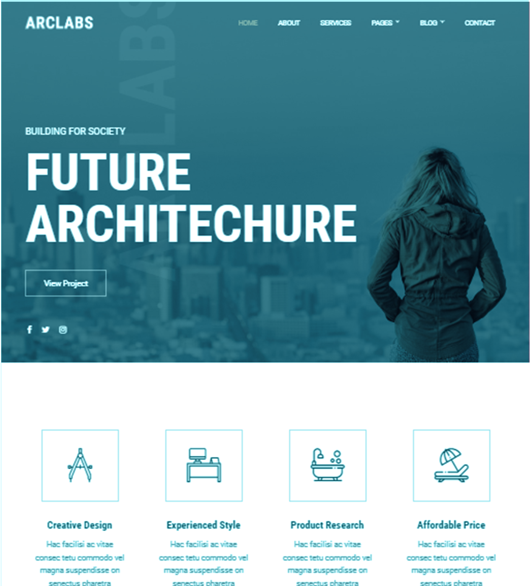

Future architecture
Site web de services architecturaux. Cette entreprise se veut jeune et a la pointe de la tendance. Sa philosophie est de se projeter dans l'architecture de demain, fonctionnelle ergonomique et fondamentalement nouvelle.